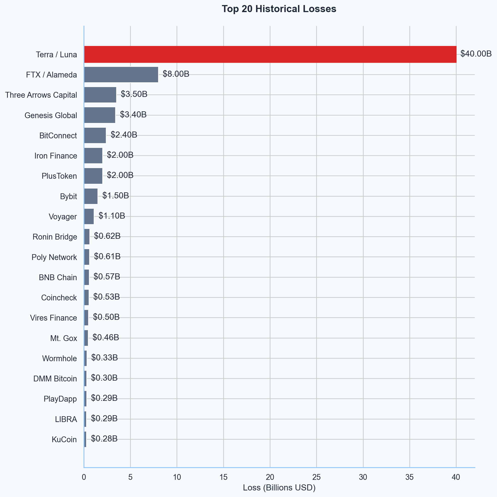
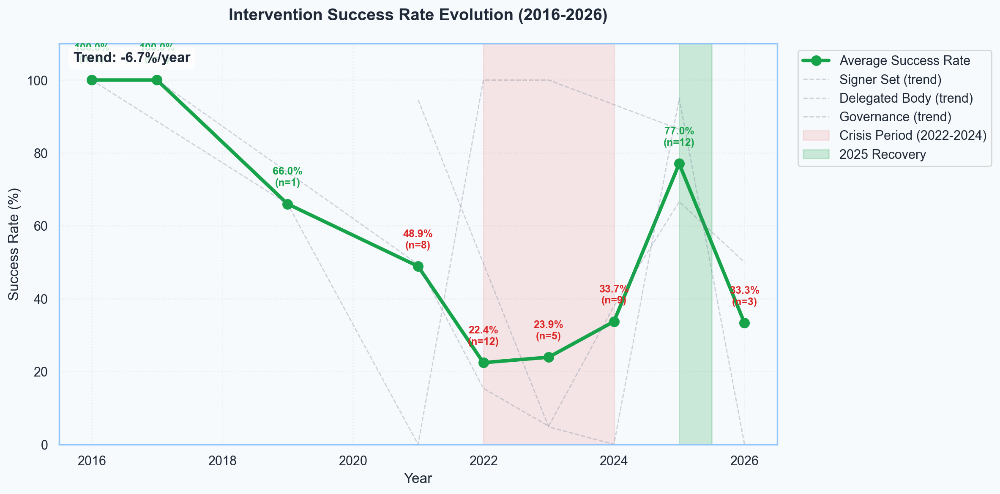
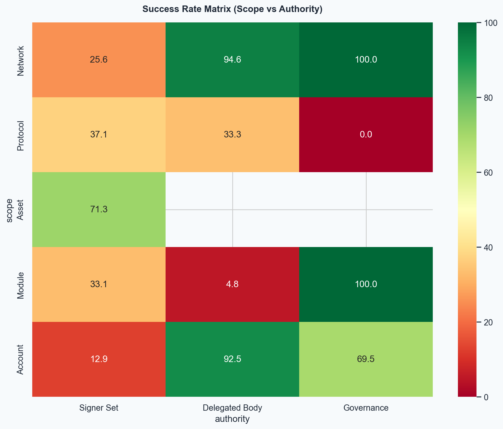

Legitimate Intervention Framework
Elem Oghenekaro, Dr. Nimrod Talmon
The cryptocurrency industry likes to believe it has moved past its "Wild West" phase. The data tells a different story.
Between 2014 and 2026, we documented 705 exploit cases resulting in $78.81 billion in cumulative losses. This represents not just a failure of code, but a crisis of legitimacy.
We present the first comprehensive study of how decentralized protocols actually respond when code fails—and why "Code is Law" is already dead.
2016: The Original Sin
The intervention era began with The DAO. A $60 million hack split the Ethereum network and established the first precedent for intervention via hard fork.
While controversial, it proved that immutability is a spectrum, not a binary. But for years, the industry pretended this was a one-off anomaly.
2021: The Expansion
As DeFi exploded, so did the attack surface. 2021 saw the rise of cross-chain bridge hacks (Poly Network, Wormhole).
Protocols began quietly implementing "pause" buttons and multisig overrides. The gap between the marketing of "unstoppable code" and the reality of "managed protocols" began to widen.
2022: The Catastrophe
The year of Terra/Luna and FTX. Annual losses peaked at $58.06 billion.
Trust collapsed. The sheer magnitude of losses forced a rethinking of safety mechanisms. Intervention was no longer taboo; it was a survival necessity.
2024: The Crisis of Speed
By 2024, hacks became automated and instantaneous. Governance-led interventions failed repeatedly because they were too slow.
The Data: Governance takes 61 hours on average to execute. Hackers drain funds in minutes. $1.63 billion was saved by centralized multisigs, while governance saved only $0.4 billion.
This "Speed-Legitimacy Tradeoff" became the central problem of DeFi security.
2025: The Turning Point
The industry adapted. New standards emerged: "Optimistic Freezing" and "Surgical Intervention."
Success rates skyrocketed from 10.9% in 2024 to 82.5% in 2025. Protocols like Balancer, Flow, and Sui demonstrated that you can have both safety and decentralization—if you design the intervention layer correctly.
The Future: Optimistic Freeze
We propose a standardized model: Optimistic Freeze.
Allow a swift, delegated committee to pause the protocol instantly (Speed), but require a full DAO vote to burn or seize funds (Legitimacy).
This balances the need for immediate defense with the requirement for ultimate decentralized control.
Explore the full 50-chart analysis →





